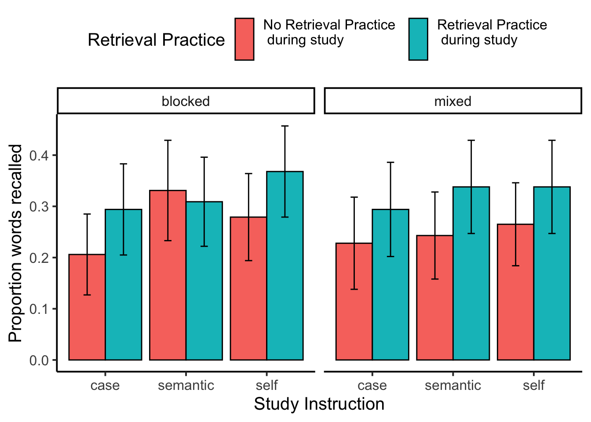

# Seed for random number generation
set.seed(42)
knitr::opts_chunk$set(cache.extra = knitr::rand_seed,
warning = FALSE,
echo = FALSE,
message= FALSE,
error = TRUE)Introduction
What is self-reference effect?
The self is a collection of the way we see our world, people and make everyday judgments in the light of our past experiences. should i delete this? Individuals process information related to one’s self and life experiences through an organized cognitive structure called self-schemata which functions as an invariable baseline against processing incoming information and making decisions or predictions about the self in various situations [@markus_self-schemata_1977]. The self has also been included in memory research over the years as a powerful mnemonic device to enhance recall. However,let us trace back to a review of one of the memory frameworks which has been refined and expanded upon for the self-reference phenomena to have been acknowledged as a mnemonic device. One of the earliest approaches to memory divided it into multilevel storage comprising of sensory stores, short-term memory and long term memory [@craik_levels_1972]. The multistore model approach is neatly divided into boxes in which particular information is stored, for example, in long term memory, mostly semantic memory is stored. However, [@craik_levels_1972] proposed that the multistore model of memory does not have satisfactory explanation to the process of memory and proposed that it is more important to view memory in terms of of levels of processing and the when the stimuli is compatible with the present cognitive concepts in mind, they will be encoded more deeply than the stimuli which is not meaningful as it does not align with any cognitive structure. This framework’s idea of deeper processing was thus supported by an experiment whose findings confirmed that the semantic tasks yielded far better performance on recall and recognition tests than structural or phonemic tasks. Although their empirical findings also presented that the time spent does not mean better retention but what matters is the the type of task involved in encoding [@craik_depth_1975]. In 1977, [@rogers_self-reference_1977] suggested that self can act as an abstract representation of one’s idea of the world which also includes past experiences and can be used to interpret new information, thus the self-reference can be an effective device in encoding of stimulus in an experiment in comparison to semantic tasks. Their results found that self-reference task appeared to be the dominant encoding device in comparison to semantic task during incidental recall in the experiment [@rogers_self-reference_1977]. Furthermore, yes-rated items were recalled more than the words rated as no, and [@rogers_self-reference_1977] put forward that this view is aligned with the idea that self is a well organized set of traits arranged in a hierarchy in which the traits which fits the person most and is important to them is at the top. The bias for self referent information was further tested by incidental encoding conditions in [@turk_self-memory_2008]‘s experiment in which participants were instructed to only judge if the trait adjective was located above or below the cue which could be either self or other. The results showed presence of the self reference effect in incidental condition as well which means that self does not need explicit cues to enhance memory performance. Research involving participants with neurological damage have also showed that in self-imagining encoding condition recall for 16 items improved even after a 30 minute delay [@grilli_self-imagination_2011]. Other than trait adjectives, relating specific episode phrases to one’s self has also produced superior recall equivalent to the participant judging if the trait adjectives described them [@bower_remembering_1979]. The involvement of self in our everyday lives was also demonstrated when participants recalled birthdays which were closer to their own birthdays, whether it involved their friends or strangers’ birthdays [@kesebir_spontaneous_2010].
Self in the brain idk if it is corny
Additionally, neuroimaging investigations have also sought out to find brain regions involved in self-referential processing of memory. A meta analysis of a neuroimaging studies involving fMRI has suggested that cortical midline structures are activated in experiments which entailed relating information to one’s self.[@northoff_self-referential_2006] Specifically, [@macrae_medial_2004] found that medial prefrontal cortex was activated during processing of self-relevant adjectives and suggests that self-referential memory formation is distinct from semantic encoding of information.
What are the underlying mechanisms of the self-reference effect?
However, despite replications of the self-reference emerging as a robust encoding device in incidental recall paradigm, there have not been many conclusive attempts to discover more detailed reasoning underlying the process of the self-reference effect. [@ganellen_why_1985] hypothesized several mediators for as to the reasons self-reference promotes incidental encoding; they proposed that affect could facilitate deep encoding of traits which relate positively to the schema of one’s self.They also proposed that it could also matter how important the word was to subject and thirdly, the level of how distinctive that word is to the subject could also lead to deeper processing. Their findings did show that in in recall subjects were able to recall words that described than more than the words that had referred to others and higher recall for words judged as affirmative. However, none of the mediators were implicated in the interaction with the self-reference effect [@ganellen_why_1985]. There have been other underlying factors proposed to have been supporting the self-reference effect: elaborative processing and organizational processing. In the process of elaboration, the stimulus word is encoded as a reference to the information related to the target word already present in subject’s memory which makes it easier to recall as multiple retrieval routes are established for recalling it [@klein_nature_1988]. On the other hand, if the subjects are cued to form associations between words and cluster them under categorical labels, they can later use that process of organization in retrieval. ([@tulving_availability_1966], as mentioned in [@klein_nature_1988]. Their experiment results yielded that it is possible that both elaborative and organizational processes were involved in self-reference yet the study was unable to draw a conclusion about which one produced larger recall. It is also possible that most of the research in regard to processes underlying SRE has been inconsistent because some studies also use descriptive tasks (ex. [@rogers_self-reference_1977]) while other studies use autobiographical task which allows for retrieval of an autobiographical memory in response to the stimulus word [@klein_two_1989]. As shown by [@klein_two_1989] their experiment demonstrated that subjects recalled more words when they had to do both, autobiographical and descriptive tasks in contrast to two of the same tasks in a row.
Coould the Self-Reference Effect be a retrieval practice phenomemon?
This was a singular and prevalent perspective of viewing the phenomenon of self-reference effect which is primarily based upon memory as having deeper levels of processing [@craik_levels_1972]. Operating within this paradigm, [@rogers_self-reference_1977] and subsequent research experiments have therefore been interested in investigating self-reference effect as a cue to encode stimuli deeply as it enables the person to relate the stimuli to themselves which leads to better retention of it. However, it is possible that during recall, it does not depend on the depth of encoding but rather on the strength of the retrieval cue. Self-reference can be an effective retrieval cue given that in our everyday lives, it is frequently used to recall personal experiences which also means that it is more readily available to be used as mnemonic device rather than the semantics cue. Thus self-reference effect also has the advantage of having been practiced in memory retrieval more than other tasks given its frequent usage. Furthermore, recall failures can also be the result of the inability to retrieve information from long term storage rather than information being lost from long term storage [@buschke_spontaneous_1974]. This reasoning can also be applied to explain the under-performance of mnemonic tasks other than the SRE as it is possible that the information was retained but it was unable to be recalled due to infrequent use of these tasks in retrieval. Given the scant number of research done on retrieval in learning, most theories have therefore focused on searching for ways to enhance encoding information but one theory states that when we retrieve information, we reconstruct what we already know by using the cues to remember [@karpicke_retrieval-based_2012].
What is Retrieval Practice and how does it improve memory performance?
Retrieval Practice is usually referred to the repeat testing trials on the same material which is to be tested on the final recall trial. A meta-analysis of studies on retrieval practice confirms that the practice tests considerably enhance learning in contrast to restudying the same material. Some studies have suggested the role of elaborative processing in retrieval, that is, that during encoding there are several semantic associations produced in relation to the the target word to aid the recall of the word or elaboration could also produce more retrieval cues for learning [@karpicke_separate_2012]. However, [@karpicke_separate_2012] demonstrated in one of their experiments with identical word pairs that retrieval practice does not occur due to elaboration but there are processes which are special to retrieval only.
Role of Retrieval Practice in the Self-Reference Effect
The present study acknowledges that self reference effect has been reliably demonstrated in research, however there has not been much agreement on the factors underlying the occurrence of this phenomenon. Research has heavily focused on the self as a structure interpreting available stimuli against past experiences which can leave a stronger trace in memory. The purpose of this study is to to include a different perspective which takes the importance of retrieval into account as one of the factors for improving recalling. This paper assumes that self-reference effect has emerged strong in free recall experiments since the participant can relate the trait adjectives to themselves using self which repeatedly engages with new information by using retrieval cues. We hypothesize that self will not emerge as a special mnemonic device in retrieval practice condition, as the memory performance will be the same across conditions. Our another hypothesis states that self and other study conditions will improve memory performance but self will remain as the subordinate mnenominc device. The current experiment will be conducted online since majority of these experiments were conducted in laboratory which can often mean that the results obtained in controlled setting could possibly not be applied to in real life. An online version of self-reference paradigm has already replicated the original [@rogers_self-reference_1977] study and found a strong self reference effect in their online experiment [@bentley_online_2017].
Experiment 1
Experiment 1 will resemble the original [@rogers_self-reference_1977] experiment in its general outline with major deviations (1) The experiment will include the original three tasks excluding phonemic task (2) The experiment will include free recall test in between the questions as well as the additional final recall cue at the end (3) All questions will contain one target trait-adjective to avoid any potential interference of non-target words.
Methods
Participants.
A total of 50 participants were recruited from Amazon’s Mechanical Turk. Mean age was 33.9 (range = 25 to 69 ). There were 26 females, and 23 males. There were 42 right-handed participants, and 8 left or both handed participants. 45 participants reported normal vision, and 4 participants reported corrected-to-normal vision. 48 participants reported English as a first language, and NA participants reported English as a second language.
Materials
There were 36 words presented in the experiment. These words were adjectives for personality traits. There were three categories of encoding tasks which were defined as structural, self-reference and phonemic.Half of the words were negative traits and other half were positive traits. It was also ensured that there was an equal ratio of positive and negative words for each encoding/retrieval task. Half of the words in the list were also presented uppercase and half of the words were presented in lowercase. This was done to prevent the participant to discriminate between structural and other tasks in terms of uppercase and lowercase words. The adjectives were retrieved from the standardized pool of 555 personality-trait words. what was the other sourcer for new adjectives?
We used R [Version 4.2.2\; @R-base] and the R-packages data.table [Version 1.14.6\; @R-data.table], dplyr [Version 1.1.0\; @R-dplyr], forcats [Version 1.0.0\; @R-forcats], ggplot2 [Version 3.4.1\; @R-ggplot2], jsonlite [Version 1.8.4\; @R-jsonlite], papaja [Version 0.1.1\; @R-papaja], purrr [Version 1.0.1\; @R-purrr], readr [Version 2.1.4\; @R-readr], stringr [Version 1.5.0\; @R-stringr], tibble [Version 3.1.8\; @R-tibble], tidyr [Version 1.3.0\; @R-tidyr], tidyverse [Version 1.3.2\; @R-tidyverse], tinylabels [Version 0.2.3\; @R-tinylabels], and xtable [Version 1.8.4\; @R-xtable] for all our analyses.
Design
This experimental design was a 3x2x2 mixed factorial design. The dependent variable was the number of words recalled in response to the type of task. The variable task consisted of three levels of tasks: semantic task, structural and self-reference task and it was a within subjects factor. The variable recall consisted of recall during encoding and recall after the presentation of 44 words and it was a within subjects factor The variable factor design consisted of blocking and it was between subjects factor as for some subjects, the tasks were mixed while for the other subjects, there were blocks of tasks presented. The cue questions for each task were presented at the top, with the target adjective at the bottom. There a YES and NO button at the bottom.
Procedure
Just Another Tool for Online Studies (JATOS) was used to host this experiment online [cite jatos]. The experiment was programmed using JsPsych (De Leeuw, 2015). The source code for the experiments is available from the project website. There was a consent form presented at the beginning of the experiment. The experiment was divided into two phases. Phase 1 entailed 44 questions and 12 recall boxes in between the cue questions. Phase 2 was comprised of two recall questions. The participant was also presented the basic instructions for each phase and had to press any key to begin the experiment. The cue question appeared after 3000 ms of blank screen. The target adjective and choice buttons appeared after 5000 ms. There were a total of 36 questions presented and each question had to be answered before proceeding to the next question. The cue questions were randomized for some participants as in a semantics cue question could appear after a structural cue question. For some participants, cue questions were presented in blocks for each task.
In phase 2 of the experiment, participants were instructed to recall all the words they could. After clicking on the button, another box appeared with instructions to spend more time and recall words.The additional recall cue was added to ensure that the participant was able to engage in retrieval practice.
Data-Exclusion
Our experiment was conducted online and it was completed by participants on their web browsers. Although there were specific instructions at the beginning of the experiment, there is a possibility that participants completed and submitted the experiment without following the instructions. Thus, we set a criteria for excluding those participants whose responses indicated that they did not follow the instructions to complete the tasks. During the study phase, part one of the experiment, participants were instructed to click on either, “Yes” or “No” button. There were three conditions: structural, semantics and self. In structural condition, the questions asked if the word displayed on screen was in uppercase or lowercase. We judged the response to the questions in this condition to be the baseline for our criteria as this condition served as the participant’s ability to attend to instructions. We excluded participants who scored lower than 70% on structural judgement questions. A total of 16 participants were excluded. We also checked for response bias as to make sure that the participants were not randomly choosing the Yes or No option as their responses to the question.
Results

We computed proportion correct recalled for each participant in each condition of the design. The proportions were submitted to a 3 (Encoding Question: Case, Semantic, Self) x 2 (Retrieval Practice: Yes, No) x 2 (Question Order: Blocked, Mixed) mixed factorial design with Encoding Question, and Retrieval Practice as within-subject factors, and Question Order as the sole between-subject factor. Mean proportions of correctly recalled words in each condition is shown in Figure @fig:fig_recall_E1. We adopted an alpha criterion of .05 for all statistical tests.
The retrieval practice effect was the only main effect to reach significance, \(F(1, 32) = 5.30\), \(p = .028\), \(\hat{\eta}^2_G = .008\), 90% CI \([.000, .124]\). Mean proportion recall was lower for items that did not receive retrieval practice (M = 0.259, SEM = 0.035), compared to items that did receive retrieval practice (M = 0.324, SEM = 0.036). No other main effects or interactions reached significance.
For completeness we also report results from performance in the encoding phase. During the encoding phase participants attempted to immediately recall half of the words following the primary judgment. We computed proportion of correctly recalled words for each participant separately in each encoding question condition. These means were submitted to a one-way repeated measures ANOVA, with question type as the sole factor. Mean proportion correctly recalled was 0.772 in the case judgment, 0.779 in the semantic judgment, and 0.846 in the self-reference condition; \(F(2, 66) = 1.39\), \(p = .255\), \(\hat{\eta}^2_G = .017\), 90% CI \([.000, .079]\).
Discussion
Our results did not support our either hypothesis and in fact participants remembered less words when they had retrieval practice during the study. We also failed to replicate the main findings of [@rogers_self-reference_1977]’s experiment in which participants recalled more words in the self-relevant tasks. One of the reasons, participants recalled less words even when they had the opportunity to practice the recall of target words could be that the effects of practice are beneficial for long term retention. In their experiment, [@roediger_iii_test-enhanced_2006] found that students recalled more units after 5 minutes of studying in comparison to students who had studied and been tested during the sessions however in contrast, students in “study,retest” condition recalled more word later on after a week. We infer that if we had given more time to participants to recall word in phase 2, the delay in time would have produced different results than the current results. However, it is also possible that the participants misunderstood that the instructions in part 2 of the experiment asked them to recall all the words, including the ones they had been tested for during the study. This is a possible reason why participants typed fewer words in the phase 2 recall. Our sample size was 50 was further reduced to 34 after the exclusion of 16 participants who were found to have been not following the instructions in the case judgment condition. We also infer that the presence of the self-reference effect in the no-retrieval condition might have as well been a noise given that the self reference effect was not observed in the no retrieval practice condition. Future research will include Brooklyn College students in exchange for a credit as to ensure that participants are following the instructions.Furthermore, for reasons difficult to explain, it has been noted that the SRE is larger in comparison to semantic tasks in undergraduate populations [@symons_self-reference_1997]. It is also possible that individuals in our small sample size did not have consistent well-structure self-schema as it has been shown that depressed subjects perform poorly on self-referent tasks in compariosn to non-depressed subjects [@davis_self-reference_1979].